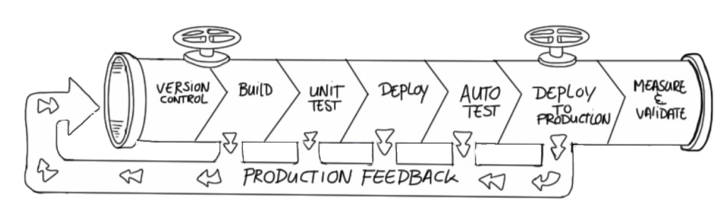
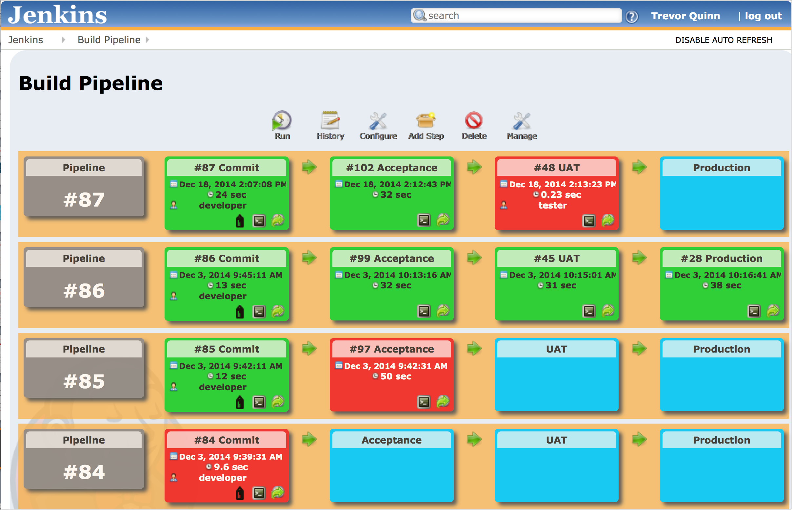
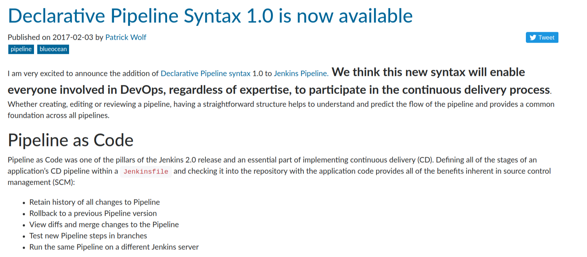
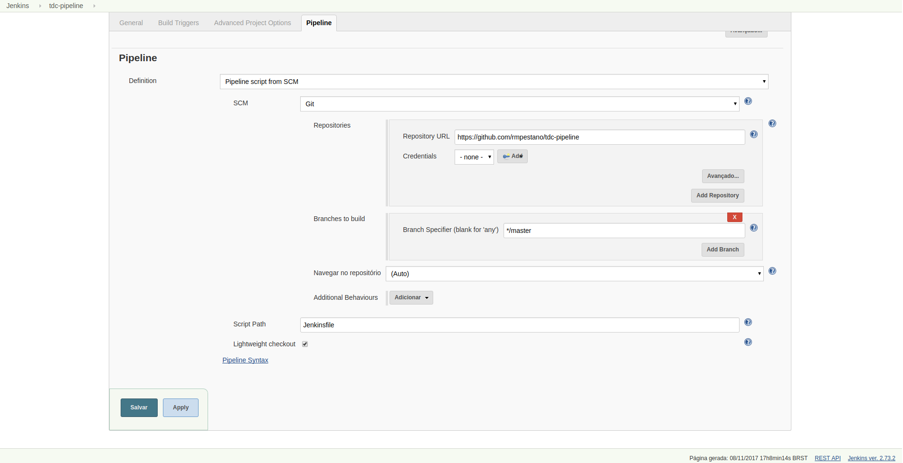
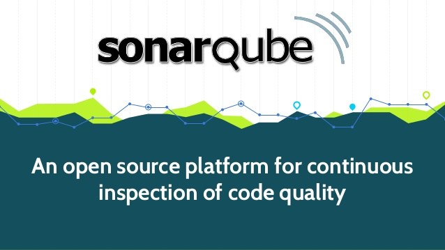
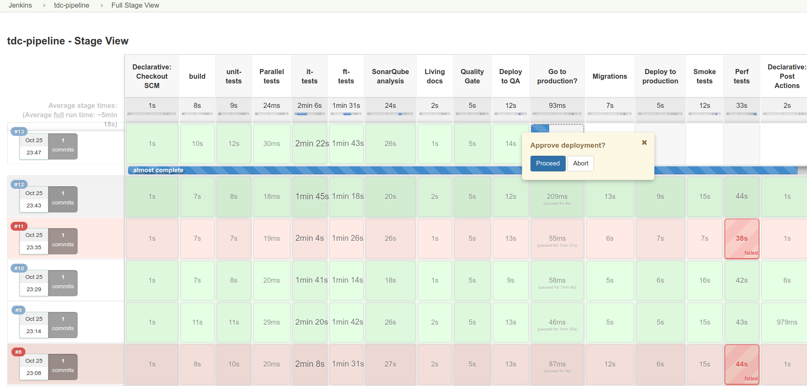

pipeline {
agent any
stages {
stage('checkout') {
steps {
git 'https://github.com/rmpestano/tdc-pipeline.git'
}
}
stage('build') {
steps {
sh 'mvn clean package'
}
}
}
}JavaEE Pipeline como código usando Jenkins, Docker e Sonar
Rafael Pestano
Desenvolvedor Java na PROCERGS
Agenda
Continuous Delivery
Pipeline
Pipeline
Pipeline
Pipeline
Pipeline
Pipeline
Referências
Continuous delivery
"A software strategy that enables organizations to deliver new features to users as fast and efficiently as possible"
É estar pronto para entregar em produção a qualquer momento!
Por que?
"… If it hurts, do it more frequently, and bring the pain forward."
— Jez Humble
Objetivos
Reduzir o risco de uma entrega
Criar um processo bem definido de release
Tornar o processo de entrega menos doloroso e com menos surpresas
Deploy para produção

Princípios
Cada commit gera um release candidate
“The longer you delay, the worse(exponentially) the problem becomes“ [Neal Ford - Director at ThoughtWorks]
-
Automatize tudo que pode ser automatizado
-
Testes automatizados são essenciais
-
Feedback rápido e contínuo
Princípios
-
Melhoria contínua
-
Colaboração, todo mundo é responsável pela release
-
Progresso mensurável
-
Quantos builds falharam?
-
Em qual etapa falhou?
-
Quanto tempo para colocar uma versão em produção?
-
Consequências
Reduces the severity and frequency of release failures
Improves the Mean Time to Recovery (MTTR)

Deployment pipeline
"… A pipeline is a set of stages to bring funcionality from developers to end users"

Jenkins 1.x pipeline

Jenkins 2.x pipeline

Jenkins 2.x pipeline
Versionamento
Reutilização (libraries)
Tudo em um único lugar (Jenkinsfile)
Sobrevive a restarts
Jenkins 2.x pipeline como código
Jenkins 2.x pipeline no código

Demo v0.1
Sonar
Demo v0.2

Quality gate
Demo v0.3
Post actions
Demo v0.4
pipeline {
agent any
//stages
post {
always {
sendNotification(currentBuild.result)
}
success {
echo 'Build was a success'
}
failure {
echo 'Build failure'
}
changed {
echo 'Build status changed.'
}
}
}//end pipeline
def sendNotification(buildStatus) {
buildStatus = buildStatus ?: 'SUCCESSFUL'
def color = buildStatus == 'SUCCESSFUL' ? 'good' : 'danger'
def message = "${currentBuild.fullDisplayName} *${buildStatus}*. (<${env.BUILD_URL}|Open>)"
slackSend (channel: '#builds', color: color, message: message)
}Pipeline libraries
Permite o reaproveitamento de trechos de um pipeline
TDC Pipeline final
